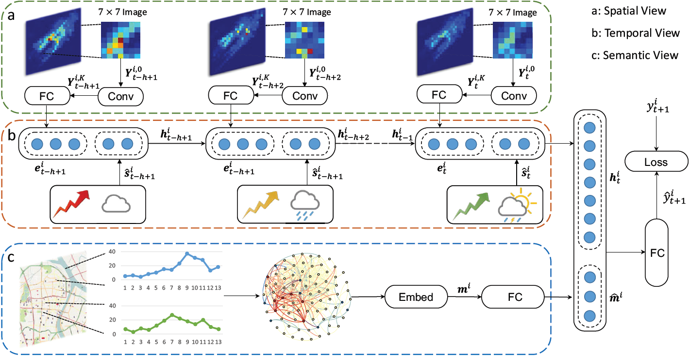
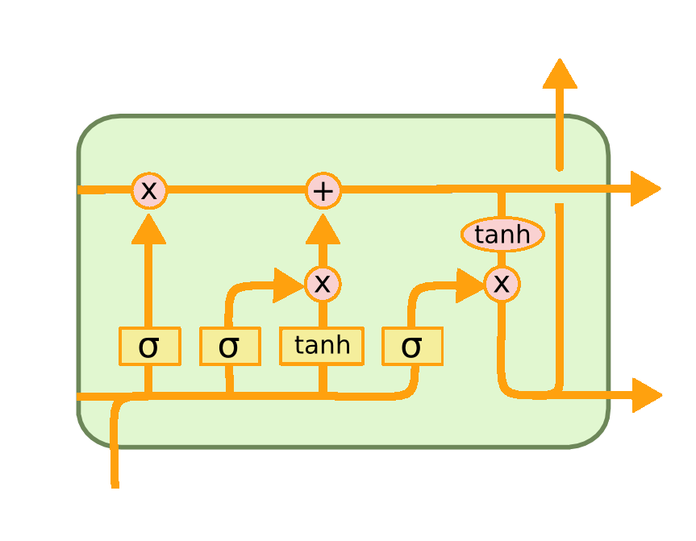

Taxi Demand Prediction
Group Members (in Alphabetical Order):
Tianjian Lei,
Shi Qiu,
Haoming Zhang
### Predicting Taxi Demand Enables
- Pre-allocate resources
- Avoid unnecessary energy consumption
- Reduce empty taxis
Current Methods
- Time Series Analysis
- Cannot capture the complex nonlinear spatial-temporal correlations
- Deep Learning on Spatial Relation
-
Deep Learning on Temporal Relation
- None of them consider spatial relation and temporal sequential relation simultaneously
Our Data
- Nov 2016, The city of Chengdu
- Didi Taxi Order Data
- Order ID, Pick up / drop off timestmp and GPS coordinate
Methodology

The Architecture(Yao et al. 2018).
## Local CNN
- First Law of Geography (Tobler, 1970) - “near things are more related than distant things”.
- Generate $S\times S$ image $\mathrm{Y}_t^i\in \mathbb{R}^{S\times S\times1}$ for each location $i$ at each time $t$.
- $\mathrm{Y}_t^{i,k}=f(\mathrm{Y}_t^{i-1}*\mathrm{W}_t^k+\textrm{b}_t^k)$
LSTM
Provides a good way to model sequential dependencies.

## Structural Embedding
Similar regions may not be close in space.
$$ \omega_{ij}=exp(-\alpha\text{DTW}(i,j)) $$